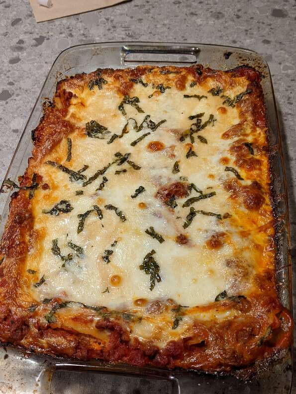

World's Best Lasagna

It takes a little work, but it is worth it!
Nutrition Info
Prep: 30 Minutes
Cook: 2 hours 30 Minutes
Additional: 15 Minutes
Total: 3 hours 15 Minutes
Servings: 12
Yield: 12 Servings
Per Serving: 448 Calories; 29.7g Protien; 36.5g carbohydrates; 21.3g fat; 81.8mg cholesterol; 1400.4mg sodium
Ingredients
- 1 pound sweet Italian sausage
- 3/4 pound lean ground beef
- 1/2 cup minced onions
- 2 cloves garlic, crushed
- 1 (28 oz) can crushed tomatoes
- 2 (6 oz) cans tomato paste
- 2 (6.5 oz) cans tomato sauce
- 1/2 cup water
- 2 tablesppons white sugar
- 1.5 teaspoons dried basil leaves
- 1/2 teaspoon fennel
- 1 teaspoon italian seasoning
- 1.5 teasppons salt, divided, or to taste
- 1/4 teaspoon ground black pepper
- 4 tablespoons chopped fresh parsley
- 12 lasagna noodles
- 16 ounces ricotta cheese
- 1 egg
- 3/4 poind mozzarella cheese, sliced
- 3/4 cup grated Parmesan cheese
Directions
- In a Dutch oven, cook sausage, ground beef, onion, and garlic over medium heat until well browned. Stir in crushed tomatoes, tomato paste, tomato sauce, and water. Season with sugar, basil, fennel seeds, Italian seasoning, 1 teaspoon salt, pepper, and 2 tablespoons parsley. Simmer, covered, for about 1 1/2 hours, stirring occasionally.
- Bring a large pot of lightly salted water to a boil. Cook lasagna noodles in boiling water for 8 to 10 minutes. Drain noodles, and rinse with cold water. In a mixing bowl, combine ricotta cheese with egg, remaining parsley, and 1/2 teaspoon salt.
- Preheat oven to 375 degrees F (190 degrees C).
- To assemble, spread 1 1/2 cups of meat sauce in the bottom of a 9x13-inch baking dish. Arrange 6 noodles lengthwise over meat sauce. Spread with one half of the ricotta cheese mixture. Top with a third of mozzarella cheese slices. Spoon 1 1/2 cups meat sauce over mozzarella, and sprinkle with 1/4 cup Parmesan cheese. Repeat layers, and top with remaining mozzarella and Parmesan cheese. Cover with foil: to prevent sticking, either spray foil with cooking spray, or make sure the foil does not touch the cheese.
- Bake in preheated oven for 25 minutes. Remove foil, and bake an additional 25 minutes. Cool for 15 minutes before serving.